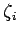
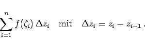
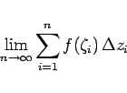
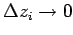
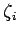
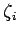
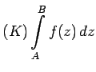
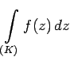
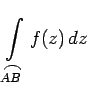

Inhalt Index DeskTop Bronstein

 Funktionentheorie Integration im Komplexen Bestimmtes und unbestimmtes Integral Definition des Integrals im Komplexen
Funktionentheorie Integration im Komplexen Bestimmtes und unbestimmtes Integral Definition des Integrals im Komplexen


Die Funktion f(z) sei stetig in einem Gebiet G, in dem eine Kurve K die Punkte A und B verbinden soll. Die Kurve K wird zwischen den Punkten A und B durch beliebige Teilpunkte zi in n Teilbogen zerlegt (s. Abbildung).
Auf jedem Teilbogenstück greift man einen Punkt  heraus und bildet
|  | (14.32a) |
Existiert der Grenzwert
|  | (14.32b) |
mit  für  unabhängig von der Wahl der Zwischenpunkte , dann wird durch diesen Grenzwert das bestimmte komplexe Integral
unabhängig von der Wahl der Zwischenpunkte , dann wird durch diesen Grenzwert das bestimmte komplexe Integral
längs der Kurve K zwischen den Punkten A und  , dem Integrationsweg definiert.
, dem Integrationsweg definiert.
Die Schreibweise  bedeutet, daß das bestimmte komplexe Integral längs der Kurve K zwischen den Punkten A und B zu berechnen ist. Häufig wird für denselben Sachverhalt die Schreibweise  bzw.  verwendet.